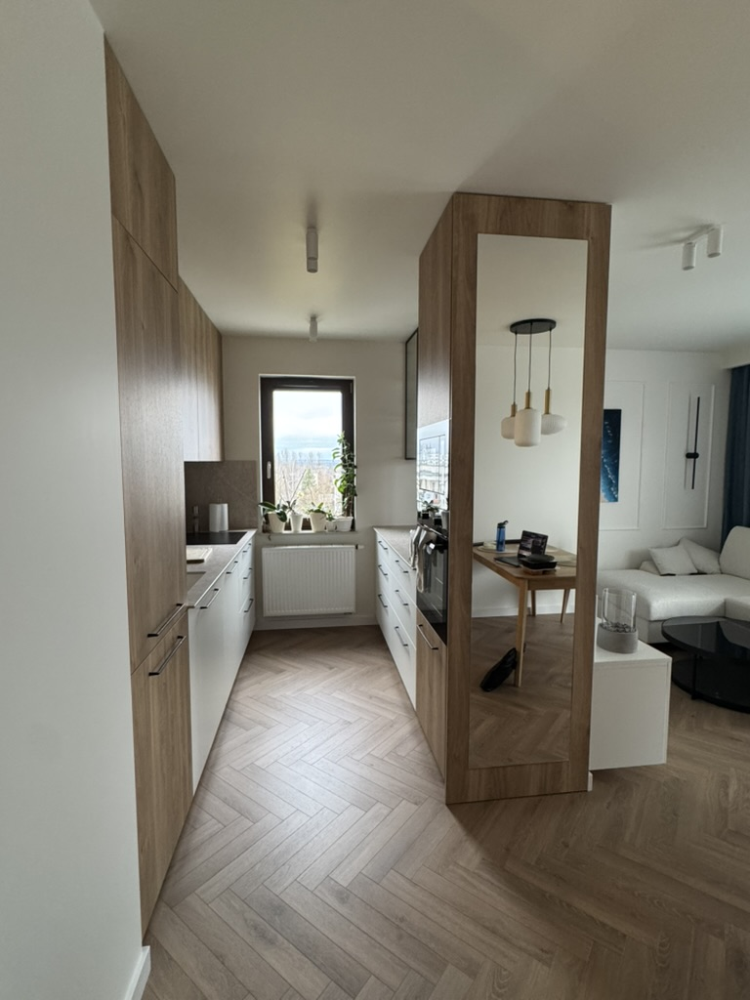
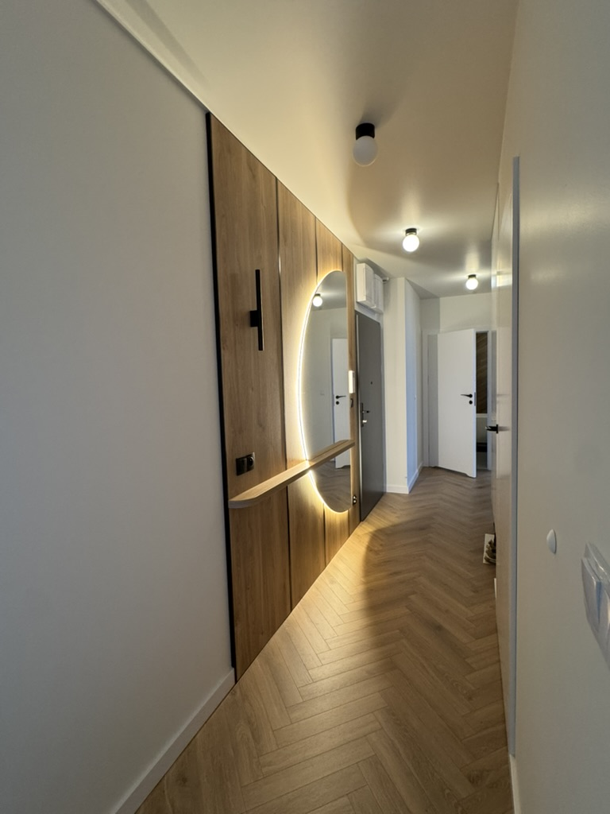
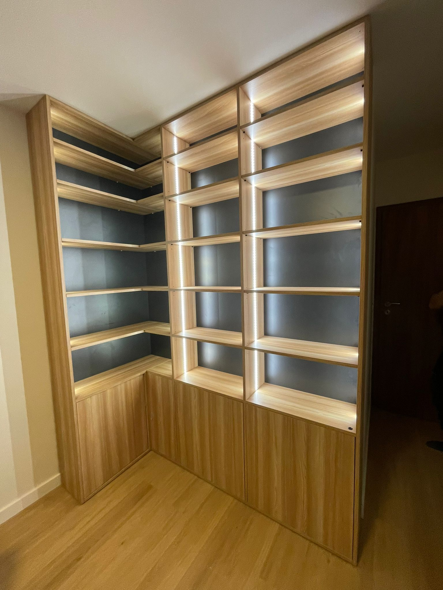
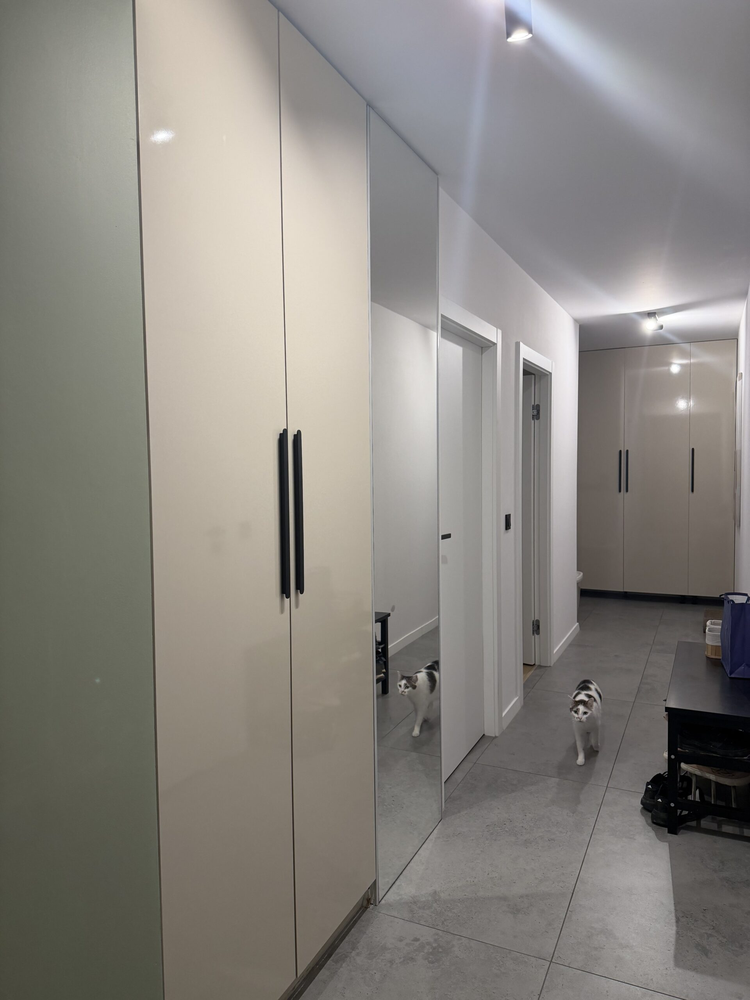
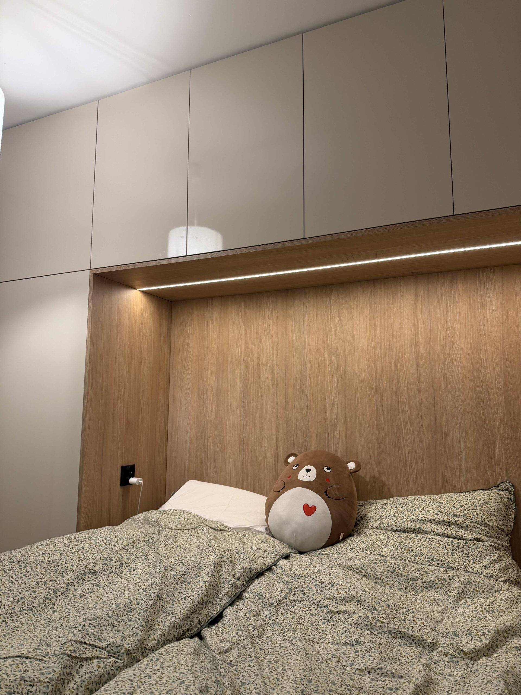
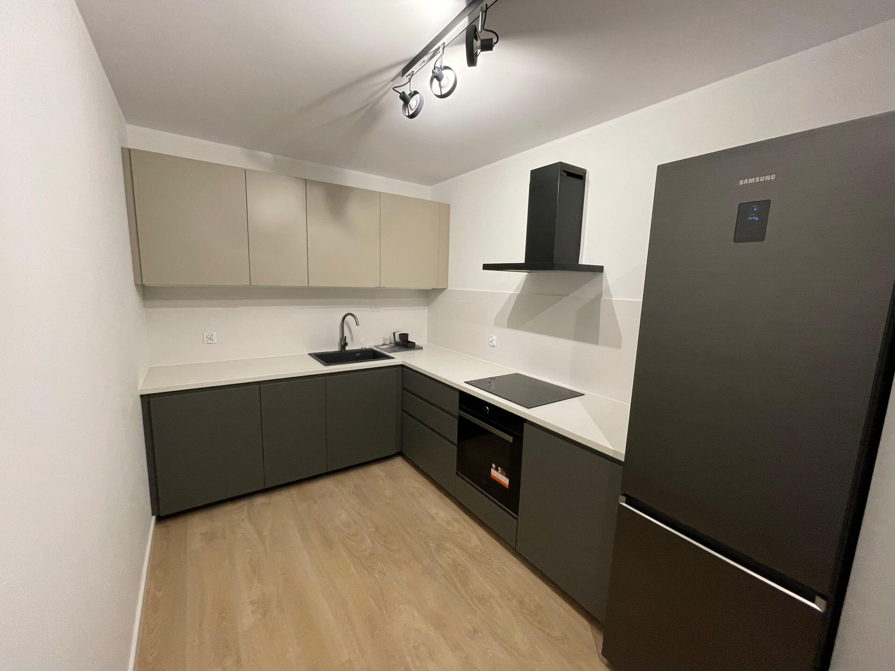

Cedrowa Stolarnia
Rola: Owner
Wszystko zaczęło się od budowy własnego domu. Robiąc meble na wymiar samodzielnie, zaoszczędziłem około 40 000 PLN w porównaniu z najtańszą ofertą, a na schodach kolejne 25 000 PLN — finalny koszt materiałów to około 700 PLN plus kilka prowadnic i resztki drewna z budowy. Jeszcze zanim skończyłem własny dom, postanowiłem założyć firmę stolarską.
Przez ponad rok zatrudniałem 2 stolarzy na etacie, przez zespół przewinęło się łącznie około 5 osób, a obroty wyniosły 450–500 tys. PLN. Zbudowałem relacje z 5–8 hurtownikami i wyposażyłem warsztat od zera — łączna wartość inwestycji wyniosła około 80–100 tys. PLN.



Z czego jestem szczególnie dumny
Najbardziej jestem dumny z tego, że miałem odwagę zbudować firmę od zera i wziąć pełną odpowiedzialność za jej wynik. Od organizacji warsztatu i zespołu, przez zbudowanie procesów, procedur i sieci dostawców, po sprzedaż i realizację projektów. Stworzyłem cały biznes od podstaw. Równolegle szukałem sposobów na skalowanie i automatyzację pracy, czego efektem była autorska aplikacja w JavaScript, która na podstawie modelu 3D generowała kompletną listę materiałową, skracając proces wyceny i zamawiania z godzin do kilku sekund. Najbardziej cenię jednak samą decyzję, żeby spróbować. Wejść w nieznany obszar, zbudować coś własnymi rękami, popełniać błędy, wyciągać wnioski i doprowadzić projekt do realnego, rentownego biznesu.
Zrealizowane projekty
- Zabudowa meblowa pięciu mieszkań w Krakowie — 80, 65, 55, 40 i 35 m²
- 4 kuchnie na wymiar
- Zabudowa dwóch kuchni oraz 10 pokoi hotelowych w Limanowej



Wnioski
Firma była rentowna, ale długoterminowo nie był to kierunek, w którym chciałem iść. Polskie realia branży budowlanej wiążą się ze specyfiką, z którą nie chciałem się godzić, dlatego zdecydowałem się zamknąć firmę i wrócić w pełni do inżynierii. Biznes się spłacił, zarobiłem dobre pieniądze, a przede wszystkim ogromnie dużo się nauczyłem — zarówno o prowadzeniu firmy, jak i o sobie.
| Projekt | PRJ-007 |
|---|---|
| Klient | Cedrowa Stolarnia |
| Okres | 2024 — 2026 |
| Rola | Owner |